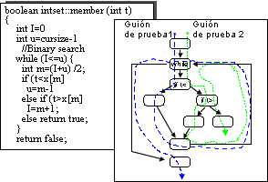
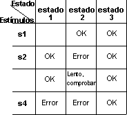

| Directriz: Diseño de prueba |
 |
|
| Elementos relacionados |
|---|
ExplicaciónNada influye más en la satisfacción del usuario con el software que una visión clara de lo que espera el usuario, de modo que puedan verificarse y validarse dichas expectativas. Los casos de prueba reflejan los requisitos que se deben verificar. No obstante, la verificación de dichos requisitos se realizar de modos diferentes y por parte de distintos verificadores. Por ejemplo, gracias a técnicas de prueba automatizadas, un verificador puede ejecutar el software a fin de verificar su funcionamiento y rendimiento, la secuencia de conclusión de un sistema se puede llevar a cabo por medio de la observación y prueba manual, mientras que las ventas y la cuota de mercado (también requisitos del producto) se pueden realizar midiendo ventas del producto y de la competencia. Puesto que quizá no pueda (o no sea responsable) de verificar todos los requisitos, resulta de extrema importancia para éxito del proyecto que seleccione los requisitos críticos o más adecuados para la prueba. Los requisitos que elija para verificar serán un equilibrio entre el coste, el riesgo y la necesidad de tener el requisito verificado. Identificar los casos de prueba es importante por varios motivos.
Con frecuencia, los casos de prueba se pueden clasificar por categorías en función del tipo de prueba o requisito para la prueba al que están asociados, y variar de acuerdo con esto. La práctica consiste en desarrollar, como mínimo, dos casos de prueba para cada requisito que probar:
Derivación de casos de prueba para pruebas de unidadLa prueba de unidad requiere probar tanto la estructura interna de la unidad como sus características de comportamiento. La prueba de la estructura interna requiere conocer cómo se implementa la unidad, y las pruebas basadas en este conocimiento se denominan pruebas de caja blanca. Las características de comportamiento de una unidad se centran en los comportamientos observables externos de la unidad sin conocer ni tener en cuenta la implementación. Las pruebas basadas en esta propuesta se denominan pruebas de caja negra. Más abajo se describe la derivación de casos de prueba basados en ambas propuestas. Teóricamente, debe probar cualquier vía de acceso posible a través del código. Conseguir dicho objetivo, incluidas las unidades más simples, resulta poco práctico o casi imposible. Al menos, debe ejecutar cada vía de acceso de decisión a decisión (vía de acceso DD) una vez, como mínimo, ejecutando así todas las sentencias una vez. Una decisión suele ser una sentencia if, y una vía de acceso DD es una vía de acceso entre dos decisiones. Para obtener este nivel de cobertura de la prueba, se recomienda elegir datos de prueba de modo que cada decisión se evalúe de todos los modos posibles. Hacia el final, los casos de prueba deben garantizar que:
Utilice herramientas de cobertura de código para identificar el código que no se ha ejercido en las pruebas de caja blanca. Las pruebas de fiabilidad deben efectuarse simultáneamente con las pruebas de caja blanca. Ejemplo: Suponga que realiza una prueba de estructura en una función miembro de la clase Conjunto de enteros. La prueba, con ayuda de una búsqueda binaria, comprueba si el conjunto contiene un entero concreto.  La función miembro y su diagrama de flujo correspondiente. Las flechas punteadas muestra cómo utilizar dos casos de prueba para ejecutar todas las sentencias al menos una vez.
Teóricamente, para una operación que se deba probar minuciosamente, el caso de prueba debe cruzar todas las
combinaciones de rutas del código. En miembro, hay tres rutas alternativas dentro de bucle blanco. El
caso de prueba puede cruzar el bucle varias veces o ninguna. Si el caso de prueba no cruza el bucle ninguna vez, sólo
queda una ruta a través del código. Si cruza el bucle una vez, se encuentran tres rutas. Si lo cruza un par de veces,
se observan seis rutas, y así sucesivamente. Por lo tanto, el número total de rutas será 1+3+6+12+24+48+... que, en la
práctica, es un número de combinaciones de rutas imposible de gestionar. Por este motivo, debe elegir un subconjunto de
todas estas rutas. En este ejemplo, puede utilizar dos casos de prueba para ejecutar todas las sentencias. En un caso
de prueba puede elegir Consulte el apartado Técnica: Prueba de unidad para obtener información adicional. Pruebas de caja negraEl objetivo de una prueba de caja negra es verificar el comportamiento especificado de la unidad desconociendo el cómo implementa la unidad dicho comportamiento. Las pruebas de caja negra se centran y se basan en la entrada y la salida de la unidad. La Partición de equivalencia es una técnica para reducir el número de pruebas necesarias. Para cada operación, debe identificar las clases de equivalencia de los argumentos y los estados de objeto. Una clase de equivalencia es un conjunto de valores para los que se supone que un objeto se comporta de modo similar. Por ejemplo, Conjunto tiene tres clases de equivalencia: vacío, algún elemento y lleno. Utilice herramientas de cobertura de código para identificar el código que no se ha ejercido en las pruebas de caja blanca. Las pruebas de fiabilidad deben efectuarse simultáneamente con las pruebas de caja negra. En los dos subapartados siguientes se describe cómo identificar casos de prueba seleccionando datos de prueba para argumentos específicos. Casos de prueba basados en argumentos de entradaUn argumento de entrada es un argumento que utiliza una operación. Debe crear casos de prueba utilizando argumentos de entrada para cada operación, para cada una de las condiciones de entrada siguientes:
Recuerde tratar el estado del objeto como un argumento de entrada. Si, por ejemplo, prueba una operación añadir en un objeto Conjunto, debe probar añadir con valores de todas las clases de equivalencia del Conjunto, es decir, con un Conjunto lleno, con algún elemento en el Conjunto y con un Conjunto vacío. Casos de prueba basados en argumentos de salidaUn argumento de salida es un argumento que cambia una operación. Un argumento puede ser un argumento de entrada y de salida. Seleccione entrada para obtener salida según cada uno de los puntos siguientes:
Recuerde tratar el estado del objeto como un argumento de salida. Si, por ejemplo, prueba una operación eliminar en una Lista, debe elegir valores de entrada de modo que la Lista esté llena, tenga algún elemento y esté vacía después de realizar la operación (pruébelo con valores de todas sus clases de equivalencia). Si el objeto está controlado por el estado (reacciona de modo diferente dependiendo del estado del objeto), debe utilizar una matriz de estado como la de la figura siguiente.  Una matriz de estado para las pruebas. Puede probar todas las combinaciones de estado y estímulos según esta matriz. Consulte el apartado Técnica: Prueba de unidad para obtener información adicional. |
© Copyright IBM Corp. 1987, 2006. Reservados todos los derechos. |